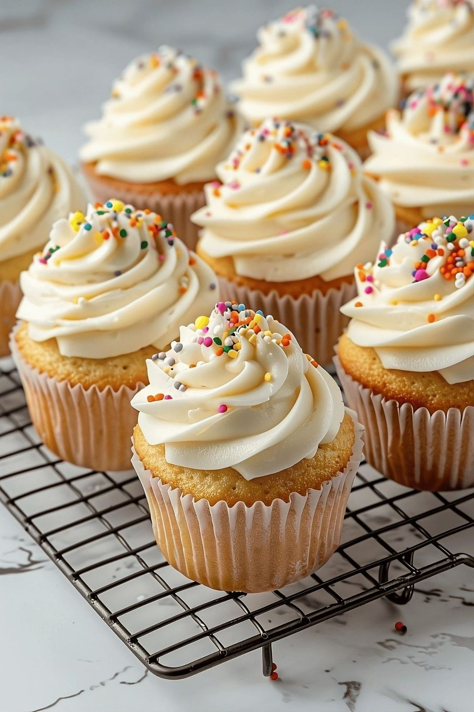

Cupcake de Café com Chantilly
O bolinho perfeito para acompanhar o café de todos os dias! É muito fácil e ainda por cima fica maravilhoso. Com certeza vai impressionar. Faça e depois me conta o que achou!
Tempo: 1h10
Rendimento: 12 porções
Dificuldade: Fácil
Ingredientes
- 2 xícaras de farinha de trigo
- 1 xícara de açúcar
- 1 xícara de café forte
- 1/2 xícara de óleo
- 2 ovos
- 1 colher (sopa) de fermento em pó
Modo de Preparo
- Preaqueça o forno a 180°C.
- Misture os ingredientes líquidos.
- Adicione os ingredientes secos e misture bem.
- Distribua nas forminhas.
- Asse por aproximadamente 30 minutos.